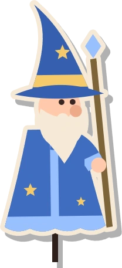

What is Wizard Battles?
Wizard Battles is a turn-based game designed as an experimental tool for psychology researchers, measuring risk-taking behaviour in individuals through a gamified method. It was partly inspired by the battle system in Pokémon and other turn-based games that I enjoy playing.
Why did I make it?
I made Wizard Battles as my third-year dissertation project for my Bachelor's degree in computer science. I chose this project because I've always been fascinated by how psychology can intertwine with computerised design, whether that be in the realm of game design, UI design or user interaction. I think psychology plays a much deeper role than people realise and I wanted to indulge myself in a project that reflected that as its core principle.